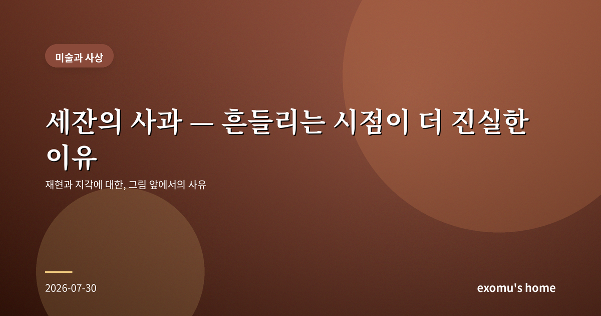
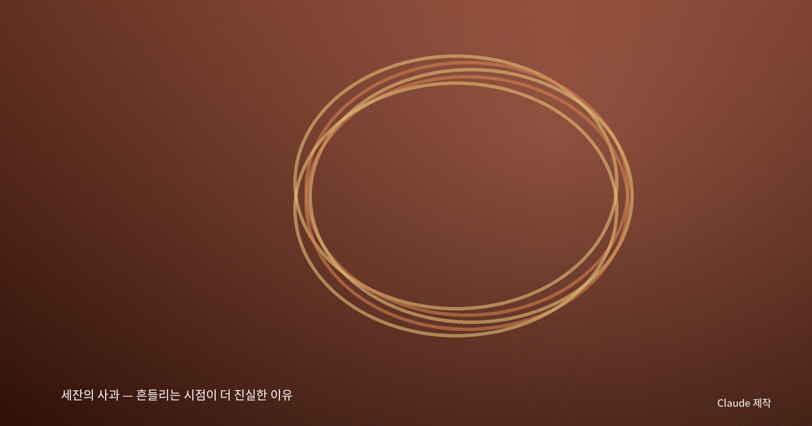
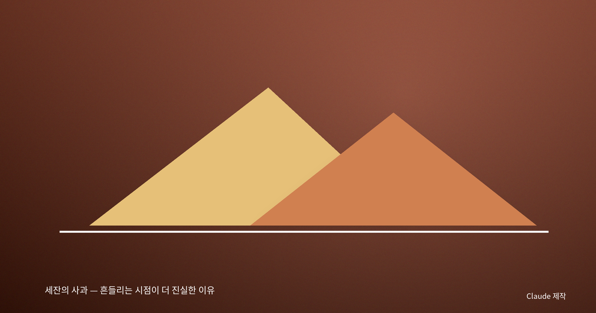
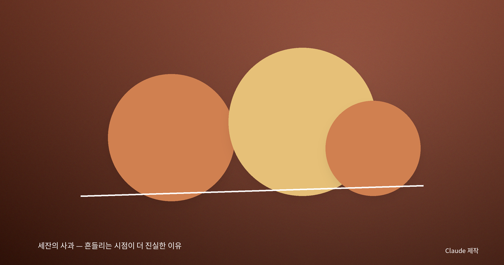

세잔의 사과 — 흔들리는 시점이 더 진실한 이유

사과 하나가 나를 멈춰 세웠다
미술관에서 세잔의 정물화 앞에 섰을 때, 나는 처음엔 조금 실망했다. 사과들은 어딘가 삐뚤어져 있었고, 식탁보는 접시를 제대로 받치지 못한 것처럼 보였다. 사진처럼 정교한 그림을 기대했던 나는 이 '서툴러 보이는' 사과 앞에서 잠시 걸음을 멈췄다. 그런데 이상하게도, 볼수록 그 사과들이 더 '진짜'처럼 느껴지기 시작했다.
세잔은 왜 시점을 흔들었나
나중에야 알았다. 세잔은 일부러 하나의 고정된 시점을 버렸다는 것을. 우리는 흔히 눈이 카메라처럼 한 지점에서 세상을 찍는다고 생각한다. 그러나 실제로 우리가 사물을 볼 때, 눈은 끊임없이 움직이고 고개는 조금씩 기울며 그 사이에 시간이 흐른다. 세잔은 그 여러 순간의 시선을 한 화면에 겹쳐 놓았다. 그래서 그의 사과는 정면에서 본 모습과 위에서 본 모습이 함께 들어 있고, 그 때문에 미묘하게 '틀어져' 보인다.
나는 여기서 재현이란 무엇인가를 다시 생각하게 된다. 대상을 있는 그대로 베끼는 것이 진실일까, 아니면 우리가 실제로 겪는 '봄'의 과정을 담는 것이 진실일까. 세잔은 후자를 택했다. 그의 그림은 사과의 사진이 아니라, 사과를 바라보는 경험 그 자체의 기록이다.

본다는 것은 이미 해석이다
20세기의 한 철학자는 지각이란 세계를 수동적으로 받아들이는 일이 아니라, 몸을 가진 우리가 세계와 만나 함께 만들어 내는 사건이라고 보았다. 그는 세잔의 그림을 두고 화가가 '보이는 것'이 아니라 '보는 일이 일어나는 순간'을 그렸다고 말하기도 했다. 즉 세잔의 흔들리는 사과는 실수가 아니라, 봄이라는 사건의 정직한 초상이라는 것이다.
이 생각은 나를 오래 붙들었다. 우리가 안다고 믿는 세계는 사실 우리 몸과 시선이 개입해 만들어 낸 것이다. 완벽하게 객관적인 하나의 시점 같은 것은 없다. 있는 것은 언제나 '어떤 자리에서, 어떤 몸으로 본' 세계뿐이다.

완성되지 않음이 주는 진실
세잔의 그림은 종종 미완성처럼 보인다. 캔버스의 어떤 부분은 물감이 얇게 비어 있고, 윤곽선은 여러 번 망설인 흔적을 남긴다. 그런데 나는 그 망설임이야말로 정직하다고 느낀다. 세상을 본다는 것은 원래 확신에 찬 일이 아니라, 끊임없이 다시 보고 고쳐 보는 과정이기 때문이다. 매끈하게 완성된 그림은 오히려 그 과정을 숨긴다.

다시, 사과 앞에서
미술관을 나서며 나는 길가의 흔한 것들을 조금 다르게 보게 됐다. 늘 지나치던 가로수, 컵에 담긴 물, 책상 위의 사과. 그것들도 내가 어느 자리에서 어떤 마음으로 보느냐에 따라 매번 다른 얼굴을 가진다. 세잔이 알려 준 것은 사과를 잘 그리는 법이 아니라, 세계를 보는 일이 얼마나 능동적이고 살아 있는 사건인가 하는 것이었다. 진실은 고정된 한 장의 사진이 아니라, 흔들리며 다시 보는 시선 안에 있다.